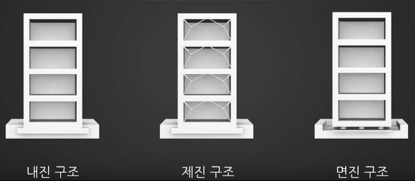
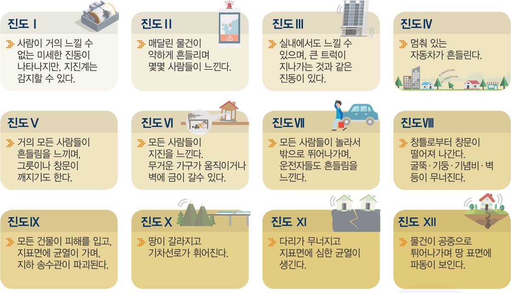
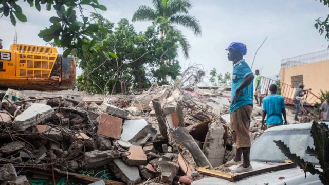
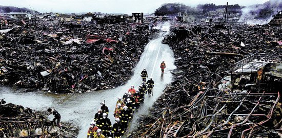

지 진
지진(地震)의 의미
지구 암석권 내부에서 갑작스럽게 에너지를 방출하면서 지진파를 만들어내며 지구 표면까지 흔들리는 현상이다. 지진은 너무 약해서 느낄 수 없는 크기서부터 사람과 여러 물건을 공중으로 들어올리고 도시 전체를 파괴할 수 있을 정도로 매우 격렬한 크기의 지진까지 다양한 강도로 일어난다. 특정 지역의 지진 활동(Seismicity)이란 특정 기간 그 지역에서 발생한 지진의 빈도, 유형, 크기를 말한다. 지진에는 지표면의 진동 외에도 정상 미끄러짐이나 슬로우 슬립 같은 비진동성 암반의 미끄러짐 현상도 포함된다.
지진 발생의 원인
지구의 내부는 내핵과 외핵, 그리고 맨틀로 구성되어 있으며 이들은 높은 온도로 젤리나 푸딩처럼 액상화되어 있다. 지각은 우리가 살고 있는 암석(우리가 밟고 생활하는 땅을 포함)을 말하는데 두께 5~35km로 지구 표면에 약 20여개의 판으로 나뉘어, 액체 위를 떠다니는 형상을 가지며 이 판들이 움직이는 속도는 약 50mm/1년 정도로 1,000년에 약 50m를 이동하는 정도다.


판이 나란히 같은 속도로 한 방향으로 움직인다면 아무 문제가 없으나 서로 맞물려있는 상태에서 다른 방향으로 제각각 움직이며, 판의 가장자리 경계면에서는 판들끼리의 마찰로 인해 에너지가 축적된다. 어느 순간 판과 판사이의 경계면에서 서로 밀거나 포개지게 되며, 순간적으로 판 사이의 미끄러짐이나 판이 갈라지는 등의 갑작스런 변화가 발생하며 축적되었던 에너지를 순간적으로 방출하는데 이것이 지진을 발생시킨다.


따라서 지진은 주로 판의 경계에서 발생하게 되는데 이와 같이 판과 판의 경계에 위치한 나라에서는 지진이 많이 발생하며. 태평양 주변은 이와 같은 판과 판의 경계가 구성되어 불의 고리라 불리울 정도로 지진이 많이 발생한다. 이 곳을 환태평양 지진대라고 하며, 여기에 위치한 대표적인 나라가 이웃나라인 일본, 인도네시아, 미국 서부 등이다. 그러나 지진이 반드시 판의 경계에서만 발생하는 것은 아니며, 판의 주변부에서도 경계에서 발생하는 에너지를 전달받아 판의 내부가 찢어지거나 지각이 얇은 쪽으로 에너지를 방출해 버릴 수 있어 판 내부에서도 지진이 발생할 수 있다. 우리나라가 위치한 한반도는 판의 내부에 위치하고 있으나 유라시아판의 주변부에서 태평양판과 필리핀판의 움직임에 영향을 받고 있는 지리적 위치에 있기 때문에, 지진의 영향을 무시할 수 만은 없으며, 판경계인 주변국(일본 열도 및 중국 중서부)의 지진에도 영향을 많이 받고 있다.
리히터 규모
지진의 강도는 진도 0에서 진도 9까지의 수치로 나타내며, 이를 리히터 규모라 한다.
리히터 규모를 1935년에 처음 제정한 과학자는 캘리포니아 공과대학 지진 연구소의 지진학자이며 물리학자였던 찰스 프랜시스 릭터(Charles Francis Richter 1900-1985)이다. 일반적으로 진도 3.5 이하의 지진은 우리 몸이 잘 느끼지 못할 정도이고, 5.5~6이면 건물에 소규모 피해가 발생한다. 그러나 2010년의 아이티 지진처럼, 진도 7 이상이면 심각한 피해를 입는다.
일반 사람들은 리히터 규모를 마치 온도계의 눈금처럼 읽을 수 있다고 생각하기 쉽다. 캘리포니아에 지진이 발생할 때마다 많은 기자들은 릭터에게 지진의 정도를 눈금으로 보여 달라고 요구했다. 기자들의 성화에 못 이겨 릭터는 진도를 나타내는 리히터 규모를 고안하게 되었다.
그는 지진이 발생한 장소(진앙 震央)로부터 일정한 거리에서 지진계가 감지하여 그려내는 지진파의 에너지를 수학적으로 계산하여, 진도를 10단계 수치로 나타내도록 했다. 진도는 10로그로 계산하므로, 진도 1이 오르면 실제 진도는 10배가 된다. 즉 진도 7은 진도 6보다 10배, 진도 5보다는 100배 강력한 지진이다. 그러나 지진의 에너지 정도를 계산하면, 진도 2 차이는 1,000배의 에너지 차이가 난다.
릭터가 지진의 규모를 영어로 ‘매그니튜드’(magnitude: M으로 표시)라고 한 것은, 그가 어릴 때 좋아하던 천문학에서 별의 밝기(광도光度)를 매그니튜드로 나타내기 때문이다. 오늘날 진도 규모를 말할 때는 그의 명예를 기려 ‘리히터 규모’(독일어 발음)라고 말하고, M6, M7.2로 표시한다. 릭터는 지진에 강한 건축물을 설계하는 내진공법 연구에도 많은 기여를 했다.
진행별 행동요령
평소대비
-
집 안에서의 안전을 확보한다.
1. 탁자 아래와 같이 집 안에서 대피할 수 있는 안전한 대피 공간을 미리 파악해 둔다.
2. 유리창이나 넘어지기 쉬운 가구 주변 등 위험한 위치를 확인해 두고 지진 발생 시 가까이 가지 않도록 한다.
3. 깨진 유리 등에 다치지 않도록 두꺼운 실내화를 준비해 둔다.
4. 화재를 일으킬 수 있는 난로나 위험물은 주의하여 관리한다.
-
집 안에서 떨어지기 쉬운 물건을 고정한다.
1. 가구나 가전제품이 흔들릴 때 넘어지지 않도록 고정해 둔다.
2. 텔레비전, 꽃병 등 떨어질 수 있는 물건은 높은 곳에 두지 않도록 한다.
3. 그릇장 안의 물건들이 쏟아지지 않도록 문을 고정해 둔다.
4. 창문 등의 유리 부분은 필름을 붙여 유리가 파손되지 않도록 한다.
-
집을 안전하게 관리한다.
1. 가스 및 전기를 미리 점검한다.
2. 건물이나 담장은 수시로 점검하고, 위험한 부분은 안전하게 수리한다.
3. 건물의 균열을 발견하면 전문가에게 문의하여 보수하고 보강한다.
-
평사시 가족회의를 통하여 위급한 상황에 대비한다
1. 가스 및 전기를 차단하는 방법을 알아 둔다.
2. 머물고 있는 곳 주위의 넓은 공간 등 대피할 수 있는 장소를 알아 둔다.
3. 비상시 가족과 만날 곳과 연락할 방법을 정해 둔다.
4. 응급처치하는 방법을 반복적으로 훈련하여 익혀 둔다.
-
평소 비상용품을 잘 준비해 둔다.
1. 지진에 대비하여 비상용품을 준비해 두고, 보관 장소와 사용방법을 알아 둔다.
2. 지진 발생 시 화재가 발생할 수 있으니 소화기를 준비해 두고, 사용방법을 알아 둔다.
지진 발생 시
-
튼튼한 탁자 아래에 들어가 몸을 보호한다.
1. 지진으로 크게 흔들리는 시간은 길어야 1~2분 정도다.
2. 튼튼한 탁자의 아래로 들어가 탁자 다리를 꼭 잡고 몸을 보호한다.
3. 탁자 아래와 같이 피할 곳이 없을 때에는 방석 등으로 머리를 보호한다.
-
가스와 전깃불을 차단하고 문을 열어 출구를 확보한다.
1. 흔들림이 멈춘 후 당황하지 말고 화재에 대비하여 가스와 전깃불을 끈다.
2. 문이나 창문을 열어 언제든 대피할 수 있도록 출구를 확보한다.
3. 흔들림이 멈추면, 출구를 통해 밖으로 나간다.
-
집에서 나갈 때는 신발은 꼭 신고 이동한다.
1. 지진이 발생하면 유리 조각이나 떨어져 있는 물체 때문에 발을 다칠 수 있으니, 발을 보호할 수 있는 신발을 신고 이동한다.
-
계단을 이용하여 밖으로 대피한다.
1. 지진이 나면 엘리베이터가 멈출 수 있으므로 타지 말고, 계단을 이용하여 건물 밖으로 대피한다.
2. 밖으로 나갈 때에는 떨어지는 유리, 간판, 기와 등에 주의하며, 소지품으로 몸을 보호하면서 침착하게 대피한다.
-
건물이나 담장으로부터 떨어져 이동한다.
1. 건물 밖으로 나오면 담장, 유리창 등이 파손되어 다칠 수 있으니, 건물과 담장에서 최대한 멀리 떨어져 가방이나 손으로 머리를 보호하면서 대피한다.
-
낙하물이 없는 넓은 공간으로 대피한다.
1. 떨어지는 물건에 주의하며 신속하게 운동장이나 공원 등 넓은 공간으로 대피한다.
2. 이동할 때에는 차량을 이용하지 않고 걸어서 대피한다.
-
올바른 정보에 따라 행동한다.
1. 대피 장소에서는 안내에 따라 질서를 지킨다.
2. 지진 발생 직후에는 근거 없는 소문이나 유언비어가 유포될 수 있으니, 라디오나 공공기관의 안내 방송 등이 제공하는 정보에 따라 행동한다.
지진 대피 후
-
가족의 상황과 부상자를 살펴보고 즉시 구조 요청을 한다.
1. 흔들림이 멈추면 함께 있는 가족끼리 부상이 없는지 집에 위험이 없는지 확인한다.
2. 부상자가 있으면 이웃과 서로 협력하여 응급처치하고 소방서(119) 등 구조구급기관에 신고한다.
-
주변의 피해 상황에 따라 귀가 여부를 결정한다.
1. 지진이 발생하면 라디오 및 주변에 있는 공공기관이 제공하는 정보에 따라 행동하며, 귀가여부를 판단한다.
-
가정이나 사무실로 돌아간 후에는 안전에 유의하여 주변을 확인한다.
1. 가정이나 사무실의 피해 상황을 확인하고, 안전이 의심된다면 전문가의 확인을 받도록 한다.
2. 옷장이나 사무실 보관함 등의 내용물이 쏟아져 내려 부상을 입을 수도 있으므로 문을 열 때 주의한다.
내진설계
지진에 저항할 수 있도록 건물을 설계하고 건물의 붕괴를 막아 인명 손상을 막기 위한 목적의 설계를 말한다.

-
내진구조
- 내진구조란 강한 규모의 지진파에도 건축물의 구조나 시설물들이 붕괴되지 않게 철근 콘크리트의 내진벽과 같은 부재를 설치하여 튼튼하게 건축하는 것이다. 큰 규모의 지진이 발생하였을 때에는 건축물에 큰 손상이 가해진다. 양 기둥에 철근이나 부재를 많이 넣어 강한 흔들림에도 버틸 수 있도록 버틸 수 있게 만든다.
-
재진 구조
- 지진이 발생 시 관성에 의하여 진동을 일으키는 지진 에너지가 발생되는데, 이 지진 에너지를 감소시키는 장치를 이용하여 건축물의 피해를 줄이는 방법이다. 재진 구조도 규모가 큰 지진의 발생 시 피해가 있지만, 최소한의 보수가 필요한 정도에 그칠 수 있다. 재진 구조는 건물에 X자 보강을 하여 건물 전체를 보호하는 구조다. 보통 흔하게 볼 수 있는 구조로 건물을 올릴 때 철제 빔을 이용하여 건물을 짓는 방법이다. 하지만 아파트의 경우에는 이 공법을 사용하지 않는다.
-
면진 구조
- 면진구조는 건물 물광 지면 사이에 고무 블록 혹은 고무 베어링 등의 면진 장치를 설치하는 방법으로 지진 에너지를 완화하는 방법으로 건축물의 피해를 최소화하는 방법이다. 면진구조는 건축물의 손상을 거의 발생시키지 않는 가장 안전한 방법이지만, 설계 비용과 공사 비용이 많이 들어가는 단점이 있다. 내진 설계 공법 중 가장 강력하고 피해 규모도 작은 공법이다. 지진이 잦은 일본의 경우, 공공기관 및 건축물의 90% 이상이 면진구조를 적용하고 있다고 한다. 현 공법 중 가장 안전한 장치라고 한다.

2010년 아이티 지진 - 진도 7.0

아이티 대통령궁과 국회 의사당을 포함한 포르토프랭스의 주요 건물들이 붕괴했거나 손상됐으며, 감옥, 공항, 병원과 같은 시설도 폐쇄됐다. 그리고 포르토프랭스의 교도소가 무너져 약 4000명에 이르는 수감자가 탈출했고, 국제 적십자 위원회는 이번 지진으로 인해 피해를 입은 인구가 아이티 전체 인구의 1/3인 300만 명에 이를 것으로 추산하였으며, 실제 사망자는 22만명이 넘었고 부상자 수만 30만명에 달하였다.
2011년 동일본 대지진 - 진도 9.0

지금까지 일본을 강타한 지진 중 가장 강력한 것으로 알려졌고, 1900년에 현대적 기록을 시작한 이래로 세계에서 가장 강력한 다섯 개의 지진 중 하나이고, 지진은 도호쿠의 이와테 현의 미야코에서 40.5m에 달하는 강력한 쓰나미를 발생시켰으며, 센다이 지역에서, 내륙으로 10km까지 침범하게 되었다.
지진은 혼슈를 2.4m 동쪽으로 이동시켰고, 2012년 9월 12일, 일본 경시청 보고서는 15,878명 사망, 6,126명 부상, 2,713명 실종을 확인했고 또한, 건물 254,204동이 반파되었을 뿐만 아니라 건물 129,225 동이 붕괴되었고 691,766동은 부분적으로 손상을 입었음을 확인하였다. 지진과 쓰나미는 많은 구역에서 화재와 댐 붕괴 등 많은 손상을 입혔고 동북 일본에 큰 구조적 손상을 입혔다. 이로인해 동북 일본의 약 440만 세대는 전기 없이 남겨졌고, 150만 세대는 물 없이 남겨지게 되었다.